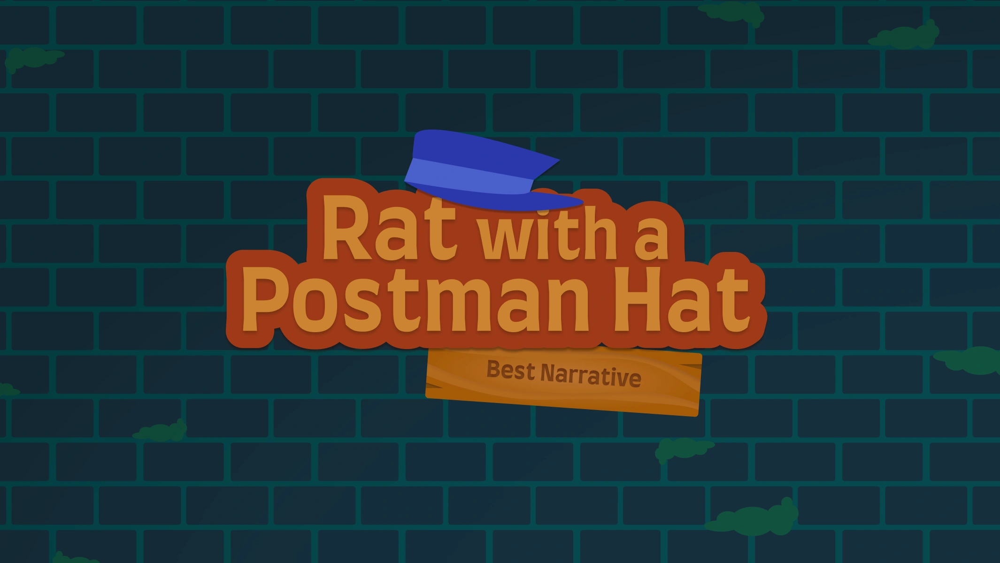

Game development
Rat with a Postman Hat: How to design an award-winning story game

-
Role
Storyteller
Musician
Potato -
Team
2 designers
1 developer -
My contribution
Dialogue, World building, Level design, Soundtracks, Game UI
-
Award
Best Narrative – Norwegian Game Awards 2024
In September 2023, I was standing alone in a room full of strangers, trying to find teammates for the course Game Design. In April 2024, our game Rat with a Postman Hat won "Best Narrative" at Norwegian Game Awards.
We are a team of three
Ingvild is our energetic, ambitious and contagiously creative developer. She coded the entire thing, and without her, nothing would've been made.
Kristine is our supportive, warm and loyal visual director. She visualises our ideas through her art, and brings the world to life.
And then there's me, the designer. I'm the certified potato, doing everything and anything else. Among other things, I was in charge of storytelling, dialogue, and level designs, shaping the adventure the player embarks on and everything they feel throughout.
Game music? I made that too!
So what's the secret sauce?
Sometimes you get lucky with a mind-opening dream, but good creative work rarely comes from nowhere. Most people rely on methods that make the creative process more consistent. These are the three I keep coming back to.
Separate making and judging
Whether I'm brainstorming or sitting down to write a text, my only goal is to get things out. No filtering, no second guessing. Backspace and undo are both off limits. This helps my thoughts flow continuously in one direction, and creating becomes much easier.
Being critical comes later, when I switch to editing mode. Only then should I start cutting, adjusting, refining. So simple, but so easy to forget. Keeping these modes separate is my most reliable way to quickly get into a flow state.
Start with the big picture, then zoom in
Before writing a single line of dialogue, I mapped the full story. The beginning, the end, the big beats in between. Then gradually zoomed in from there. Starting broad keeps the small decisions anchored to something, and stops you from over-investing in details that might not survive the bigger picture. Ten rough ideas will always tell you more than one polished piece.
A happy team makes better work
Things are easier and better when you're having fun. For us that meant check-in rounds, memes, stickers, minigolf. Small stuff. But a team that's enjoying itself is more creative, more honest, and more willing to push through when things get hard.